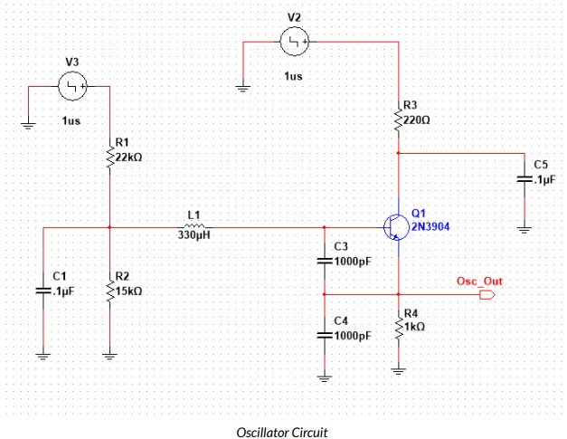
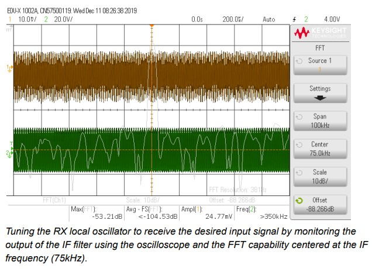
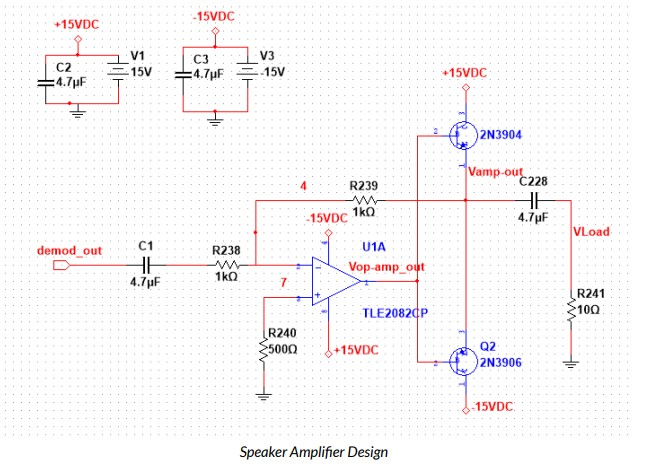

Playing Mario Kart in the Lab using the Tx/Rx build as the speaker
Design and build of Modulators, filters, and converters for AM Transmitter and Receiver at 435kHz
The purpose of this project was to utilize a semesters worth of lab work in communications electronics to design a complete transmitter and receiver that utilizes AM modulation.
Playing Mario Kart in the Lab using the Tx/Rx build as the speaker
The first circuit designed for the Transmitter was the input Audio amplifier and a Sallen Key Low Pass filter. following design simulation and frequency reponse testing, a local oscillator was designed and built around the frquency 435kHz
Figure 2: Circuit Schematic showing the design of the transmitter's local oscillator
Being limited only to on-hand lab stock meant aa additional shunt cap was needed the collector of the 3904 Transistor to bring the initial oscillating frequency down from 450kHz operating to the desired 435kHz. The amplitude modulator was designed next, with a few additonal parts to work as a matching network for the 50Ohm lab equipment. An output filter was also added to the final stage of the Transmitter to clean up the signal.
For the front end filter of the Receiver, a 5th order Butterworth was designed. Similar to the Transmitter, the Receiver needs a local oscillator and a de-modulator. A downconverter was designed to be used with selected speaker, and an IF filter and amplifier circuits were also needed for complete operation.
Figure 3: IF filter showing signal rejection outside the desired 75kHz range
While
A common op-amp circuit was used to amplify the audio signal.
Overall this project was a fun challenge and a good way to finish the course by incorporating a lot of the covered material into one project.